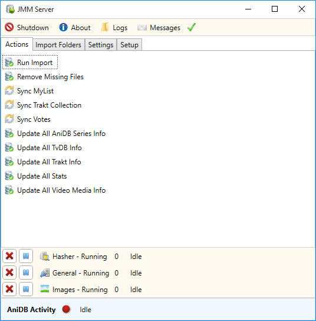

JMM Server - Actions Tab
The actions tab allows you to manually update your collection data and sync it with the different community sites JMM uses.

Run Import - Will start scanning your selected import folders and add any new files to your collection.
Remove Missing Files - Will scan your import folders and remove any files no longer in your collection.
Sync MyList - Will sync your collection with your MyAnimeList account.
Sync Trakt Collection - Will sync your collection with your Trakt account.
Sync Votes - Will sync your votes with your AniDB and MyAnimeList account.
Update All AniDB Series Info - Will update all series AniDB info in your collection.
Update All TvDB Info - Will update all series TvDB info in your collection.
Update All Video Media Info - Will update all technical details about the files in your collection.
Additional Information
- Depending on your collection size, each action could take awhile to complete.
- Do not click on an action multiple times as it will stack the task, this will cause a temporary ban at one the community sites.
- The task-bar at the bottom will display how many items are left to complete.
- Update All Stats has been deprecated.